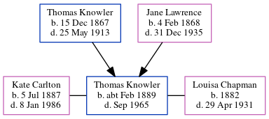

Thomas William Knowler cFeb 1889 - 1965
[ Home ] | [ Calendar ] | [ Surnames Index ] | [ Errors ] | [ Family History ]The child of Thomas Knowler (an agricultural labourer) and Jane Lawrence, Thomas Knowler, the first cousin twice-removed on the mother's side of Nigel Horne, was born in Thanet, Kent, England c. Feb 18891,2,3,4,5. He was married twice - to Kate Carlton (in 1951 in Dover, Kent, England) Louisa Chapman (on 18 Aug 1915 in Betteshanger, Kent, England)6.
During his life, he was living in Staple, Kent, England in 18911; and in Woodnesborough, Kent, England in 19012.
He died in Sep 1965 in Ashford, Kent, England4.
Parents
- Thomas William was born on 15 Dec 1867
- Jane was born on 4 Feb 1868
Citations
- 1891 England Census Online publication - Provo, UT, USA: The Generations Network, Inc., 2005.Original data - Census Returns of England and Wales, 1891. Kew, Surrey, England: The National Archives of the UK (TNA): Public Record Office (PRO), 1891. Data imaged from The National (Relation to Head of House: Son)
- 1901 England Census Online publication - Provo, UT, USA: The Generations Network, Inc., 2005.Original data - Census Returns of England and Wales, 1901. Kew, Surrey, England: The National Archives of the UK (TNA): Public Record Office (PRO), 1901. Data imaged from the National (Relation to Head of House: Son)
- England & Wales births 1837-2006 - Findmypast
- England & Wales, Death Index: 1984-2005 Online publication - Provo, UT, USA: The Generations Network, Inc., 2007.Original data - General Register Office. England and Wales Civil Registration Indexes. London, England: General Register Office. © Crown copyright. Published by permission of the Cont
- England & Wales, FreeBMD Birth Index, 1837-1915 Online publication - Provo, UT, USA: The Generations Network, Inc., 2006.Original data - General Register Office. England and Wales Civil Registration Indexes. London, England: General Register Office. © Crown copyright. Published by permission of the Cont
- England & Wales, Marriage Index: 1916-2005 Online publication - Provo, UT, USA: The Generations Network, Inc., 2009.Original data - General Register Office. England and Wales Civil Registration Indexes. London, England: General Register Office. © Crown copyright. Published by permission of the Cont
Media
Thomas Knowler - Louise Chapman

Thomas Knowler - Louisa Champan 2

England & Wales births 1837-2006 - BMD/B/1889/1/AZ/000330/114
Family Tree
Map
Generated by ged2site. Last updated on Jul 3, 2024
Known Issues
Date of residence (1891) differs from mother's in same year (5 Apr 1891)
1891: Not living with either parent in childhood when aged 2
Date of residence (1901) differs from mother's in same year (31 Mar 1901)
1901: Not living with either parent in childhood when aged 12
1939 UK register information missing